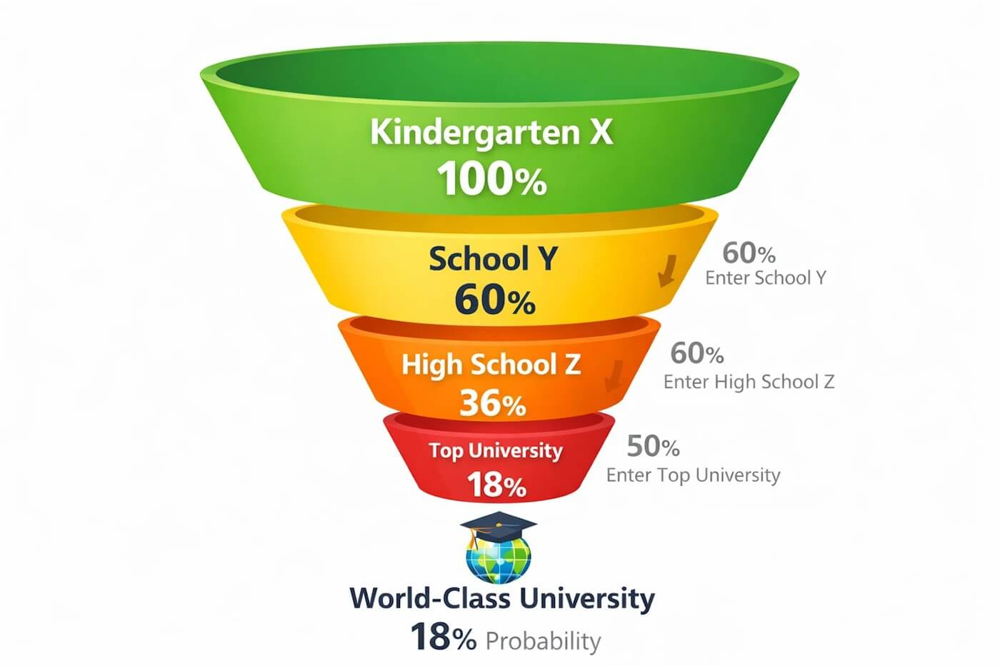

Къде да учи детето ми?

Пиша тази публикация с ясното съзнание, че ще разбуни много духове. Вероятно някой няма да е съгласен с мен, друг ще се обиди. Но няма седмица, в която някой да не ме попита: „Къде да запиша детето си?"
Затова реших да споделя своето мнение – такова, каквото е. Не като универсална истина, а като позиция, до която съм стигнал след години мислене, наблюдение и личен опит.
Важно уточнение: следващите редове са лично мнение, базирано на две фундаментални ценности:
- Образование – аз съм от учителско семейство. У нас знанието и ученето винаги са били на почит.
- Growth mindset – вярвам, че всеки човек се ражда с определен човешки и интелектуален потенциал. И че наша отговорност – особено като родители – е да помогнем този потенциал да бъде отключен и реализиран.
Ако споделяте тези две ценности, тази публикация вероятно ще ви бъде полезна.
1. Защо е важно къде ще учи детето ми още в 1. клас?
Защото именно тогава се изграждат първите образователни навици – а те остават за цял живот.
- Как се учи.
- Защо се учи.
- Какво е отношението към знанието.
Всичко това се формира в първите години от образованието.
В някои училища учебният процес е задължение – и за децата, и за учителите. В други е игра, любопитство, ентусиазъм.
Статистическа вероятност
Когато избирах къде да запиша голямата си дъщеря, видях следното:
- има ДГ 60% от чиито деца влизат в ЧОУ „Св. София" (училището с най-висок академичен резултат в България)
- близо 60% пък от децата на Св. София продължават в Американския колеж
- а около 50% от завършилите колежа влизат в топ университети по света
Оказва се, че с едно на пръв поглед дребно решение – в коя детска градина да запиша детето си – аз вече съм му дал около 18% вероятност да стигне до най-добрите университети в света. За сравнение: средната вероятност за български ученик е около 0.05%.
Т.е. – само с този избор съм дал на детето си 360 пъти по-голям шанс от този на връстниците му.
Записвайки детето си в добро училище, вие вземате може би най-важното решение в живота му. Но и незаписвайки го – пак вземате решение.
Разширяваща се ножица
В огромен процент от случаите това означава да го лишите от възможността да реализира пълния си потенциал. Защото разликата между децата започва да се трупа рано – и расте с всяка година, често до степен, в която става невъзможна за наваксване.
Прост пример: ако в едно училище се учат по 4 часа математика седмично, а в друго – по 10, как очаквате тези деца да са на едно ниво след 1, 2, 5 или 10 години?
Не на последно място – има редица изследвания, които показват корелация между успеха на възрастни хора и наличието на определени умения още на 6–7 годишна възраст. Едно от тях например е delayed gratification – умение, което в едни училища се развива целенасочено, а в други изобщо не се засяга.
2. Държавно или частно училище?
В България има елитни държавни училища – в смисъла на високи академични постижения. Има и страхотни учители, които правят чудеса от храброст.
Но за мое огромно съжаление – това са изключенията, не правилото.
Средата
В масовия случай аз лично бих избрал частното училище, и то основно заради средата – ученици и родители.
Съучениците на дъщеря ми обсъждат: състезания, кой каква книга е прочел, предстоящото контролно по „Човек и природа" – а не последния хит на Галена или снощния епизод на Ергенът.
Това е средата, в която искам да расте детето ми.
В частните училища има естествен финансов филтър. И не – не всички ЧОУ-та са пълни със сноби и богаташи. Дори бих казал обратното: в повечето частни училища родителите са напълно обикновени хора – с 10-годишни автомобили и 30-годишни ипотеки, но с ясно изразена ценност към образованието.
Т.е. освен финансов, има и ценностен филтър.
Учителите и мотивацията
В държавните училища учителите често са смазани от бюрокрацията. Заплатата им може да не мръдне с десетилетия. Каквото и да правят.
В частното училище:
- има повече свобода,
- заплатата зависи от резултатите,
- директорът има пряк интерес да задържи добрите учители.
В държавното училище директорът почти винаги има гарантирани ученици от квартала – независимо от качеството на „услугата". Затова най-големият му страх не е, че някой ученик ще напусне недоволен. Най-големият му страх е да не получи проверка от РИО. В подобна среда учителската инициатива се наказва, а ентусиазмът се смачква.
Какви учители оцеляват там? Често – тези без жар и без алтернатива.
А ако учителят ходи на работа по задължение – какво очакваме от ученика?
Сградният фонд
Да, звучи повърхностно, но има значение дали детето влиза в светла, чиста, модерна сграда – или в сив „затвор" с ронеща се мазилка и тоалетна с клекало.
Отношението към сградата се превръща в отношение към ученето.
Домашните и комуникацията
В много държавни училища има ежедневни домашни, които често се превръщат в бреме. Все повече изследвания отричат този подход.
В частните училища: в началото често няма домашни, по-късно има умерени седмични задачи. Учителите и родителите са екип. Комуникацията не се изчерпва с абсурдни групови родителски срещи. Не е идеално, но е далеч по-добре.
3. Лишавам ли детето си от детство?
Първо – какво е детство? Да играеш. Да правиш пакости. Да опознаваш света – физически, социално, емоционално. И всичко това – през игра, не през задължение.
Децата в частните училища правят всички тези неща. Освен ако не бъдат смазани от болноамбициозен родител, който ги кара насила да решават задачи след училище и да свирят по 1 час на пиано всеки ден.
Както винаги – ключът е в баланса.
Нито една от двете крайности не работи:
- остави дете 10 години да цъка игри → ще стане нехранимайко;
- натисни го 10 години само да учи → ще стане комплексиран нещастник.
Имайте предвид и нещо друго: в информационната ера децата съзряват много по-бързо. Ако продължавате да третирате 7-годишния си син като бебе и 10-годишната си дъщеря като дете – правите им лоша услуга.
И не забравяйте летата – 3 безгрижни месеца всяка година. Така че не, най-вероятно не лишавате детето си от детство. По-скоро му давате силен старт в живота.
4. „Не е важно къде, важна е учителката"
И двете са важни.
В масовия случай, където запишете детето си в 1. клас, там ще остане до 7. клас. Това са седем ключови години, в които се полагат основите.
Да – началната учителка е изключително важна. Но в едни училища шансът да попаднете на добър учител е 20%, в други – 80%.
Проучете и мислете стратегически.
5. Кога да започнем подготовката?
Моето лично мнение – на 2–3 години.
- Четене на приказки → любов към книгите и абстрактно мислене.
- Учене на букви и цифри през игра.
Примери от нашето ежедневие:
- Имах игра с Теа. Докато я возих към ДГ, я карах да следи рег. табели на колите и да ми покаже кола, която не е от София. Така тя опозна буквите.
- А сега пък с Кая – докато шофирам за градина, броим през едно: тя казва 1, аз казвам 3, тя – 5 и т.н. Понякога греша нарочно, за да ме поправи и да се посмеем заедно. Вече минахме на смятане – давам ѝ 2 ябълки и я питам „Ако изядеш едната, с колко ще останеш?"
Най-важното:
- родителят да е ангажиран;
- да дава личен пример – ако вие сте постоянно в телефона, не очаквайте детето да чете;
- споделяйте теми, които вълнуват вас – покажете как човек изследва, търси, мисли.
Финални думи
Не ни е никак лесно на нас родителите. Защото искаме най-доброто за децата си и къде да ги запишем да учат е важен и труден избор, в който се лутаме между това да им дадем силен старт в този конкурентен свят и това да им дадем безгрижно детство.
Но колкото по-рано започнете да мислите по тези въпроси, толкова по-голям е шансът детето ви да развие и реализира пълния си човешки и интелектуален потенциал.